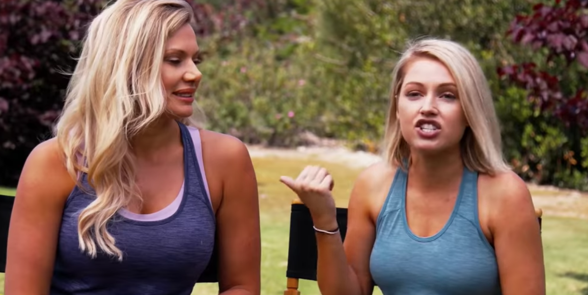

Amazing Car Racing Turning Mecard Adventure Game for ... Early Black Friday Deals Best Sellers Prime Video Customer Service Books New Releases Gift Ideas Electronics Home & Garden Vouchers Gift Cards & Top Up PC Subscribe & Save Shopper Toolkit ... App Free Download. Available for download now. Street Racer ... Offroad Dune Buggy Car Racing Outlaws Simulator 2018: Dirt Track Games Free for Kids. 14 ...
Live Betting Shows | 16:25 Download The At The Races App ... Using APKPure App to upgrade Amazing Car Racing Turning Mecard Adventure Game, fast, free and save your internet data. The description of Amazing Car Racing Turning Mecard Adventure Game. Welcome to Hero Cartoon Turning Mecard Adventure. Pass all Turning Mecard of the obstacles for examples monster truck until finish and get your higher scores.
Best 10 Racing Games for Kids - Last Updated November 8, 2020 #1 Free street racing 3D car 🚘 game! Drive a top-class sports 🏎 car, join the top street racing camp! 🎉 🎉 Real racing, 🆒 drift in the asphalt. 🏁 Racing in multiple races, driving on the streets, full of exciting challenges, and the world's professional racers compete to become a street legend! 🥇 Start driving in unique car 🚘 or never seen before on the asphalt tracks ...
The Racing App on Vimeo Our unique algorithm scoured the App Store and Google Play Store by searching kids racing, kids racing games and kids racing games free. From there, we retrieved a total of 1,059 unique apps (455 Android apps and 604 iOS apps) as potential candidates.
Amazon.co.uk: Racing - Games: Apps & Games Find out more & download the range of official MotoGP™ mobile & tablet apps that are available for download for both iOS and Android. Follow the action live & take MotoGP with you wherever you go.
Street Racing 3D for Android - APK Download 3h Racing Pearl purely awesome for Cox The Brad Cox-trained Aunt Pearl justified favouritism with a never-in-doubt, all-the-way win in the Breeders' Cup Juvenile Fillies Turf at Keeneland.
Win amazing prizes with the MotoGP™ Racing App Looking for Racing games to download for free? Here are the top free Racing games for PC for 2020, including Renzo Racer, Retro Car Driver, Hard Ride 2, and more. Download only unlimited full version fun games online and play offline on your Windows desktop or laptop computer. Fast and secure game downloads.
The Latest Horse Racing News & Results From Racing TV
2020.11.12 18:01

Watch Live Replays On Demand Catchup TV Schedule Races Racecards Ante-Post Non-Runners Racecourses Results Tips Tips Free Bets News Latest Most Read Featured Columnists Club Days More Tracker Betting Accounts Members Benefits Racing TV Extra Racecourse Offers Podcasts Rewards4Racing Competitions Travel Club Shop Betslip 0 Join Login Upgrade Members 0 JP McManus pays record £570,000 for Douvan’s brother Jonbon at Goffs sale The next question is who the leading owner will send the four-year-old to be trained by. Willie Mullins believes Nicky Henderson is in pole position Relentless Bachasson leads home Clonmel Oil one-two for Mullins Watch the closing stages of Thursday s Grade two feature plus Gary O Brien s interview with winning jockey Danny Mullins Dave Nevison s Thursday Tips: Versatility too well treated to overlook Having shaped with some promise in first-time blinkers at Bangor, Dave Nevison hopes Nicky Henderson s Versatility can break his duck over fences at Ludlow, live on Racing TV. Cheltenham regular Aso heads final field of 17 for Paddy Power Gold Cup All the five-day confirmations have stood their ground for Saturday s feature, which you can watch live on Racing TV How To Bet £20 on day one of The November Meeting at Cheltenham Andy Stephens has had an early look at the action at Prestbury Park on Friday and has a strategy to make the six races pay. Watch what happens live on Racing TV Road To Cheltenham - Walk the courses with Lydia and Ruby Get the inside line - or the outside line around the Old and New courses as Ruby Walsh explains where races are won and lost. Five horses to look out for at The November Meeting at Cheltenham this week The racing action takes centre stage at Prestbury Park on Friday, Saturday and Sunday, with plenty of stars set to be on show across the three days. Tote Ten To Follow Competition: Johnny Ward makes his choices Our Irish expert Johnny Ward can only find space for one British-trained horse among his suggested ten for the Tote competition - check out his selections! Live Racing On Demand TV Schedule Free Bets Racecourse Offers ON NOW Live Racing Racing TV Extra Clonmel Racing TV Extra Ludlow Racing TV Extra Taunton Racing TV Extra Chelmsford City
Latest News
More JP McManus pays record £570,000 for Douvan’s brother Jonbon at Goffs sale The next question is who the leading owner will send the four-year-old to be trained by. Willie Mullins believes Nicky Henderson is in pole position Drama at Taunton as Twin Star disqualified after rider fails to weigh in Relentless Bachasson leads home Clonmel Oil one-two for Mullins Watch the closing stages of Thursday s Grade two feature plus Gary O Brien s interview with winning jockey Danny Mullins Cheltenham preview: Robbie Power relishing opportunity to ride Tiger Roll How To Bet £20 on day one of The November Meeting at Cheltenham Andy Stephens has had an early look at the action at Prestbury Park on Friday and has a strategy to make the six races pay. Watch what happens live on Racing TV Five horses to look out for at The November Meeting at Cheltenham this week The racing action takes centre stage at Prestbury Park on Friday, Saturday and Sunday, with plenty of stars set to be on show across the three days. 17:00 Chelmsford City 7F (12 runners) 12 2 Trumble (IRE) J: L Morris 1/1 4 9 To the Bar (IRE) J: S W Kelly 4/1 6 5 Capla Knight (IRE) J: Tom Marquand 11/2 17:30 Chelmsford City 1M (14 runners) 6 8 Aadila J: Ray Dawson SP 10 5 All In the Game (IRE) J: Liam Keniry SP 1 10 Ambarella (IRE) J: Tom Marquand SP
Videos
More Clonmel Oil Chase Contenders Robbie Power - Fiddlerontheroof - Exeter Harry Whittington on leading Paddy Power Gold Cup hope Simply The Betts Racing TV HD On Sky 426 Beginners Chase (GBB Race) Feature From Cyfor Malta to Imperial Commander - November Gold Cup Classic Contests Road to Cheltenham Road To Cheltenham - Walk the courses with Lydia and Ruby Best Offers UK customers only. 18+. Place your first bet on Pools and if it loses we’ll refund your stake in cash. Max refund is £10. Qualifying bet is the first bet added to the betslip. Totewin will be the qualifying bet when a Totewin and a Toteplace bet are struck at the same time. E-wallet deposit restrictions apply. Full T&Cs apply. Get Offer Join the Tote to play Ten To Follow and also get a risk free £10 bet UK+IRE only. Min first bet £5 at odds 1/2 or more. Tote and Pool excluded. Must be placed within 14 days of account reg. £20 credited as 4 x £5 free bets. Not valid with Cash Out. Free bet valid for 4 days. Free bet stake not returned. T&Cs apply. Get Offer Bet £10 Get £30 with Coral New Customers only. Opt in and place a £10 qualifying bet at odds of 2.00 or greater on Horse Racing within 7 days of registering; excludes cashed out bets. Receive 3x £10 Horse Racing Free Bets, plus a £10 Gameshow Bonus. Wager Gameshow Bonus 40x to withdraw max winnings of £250. Bonuses expire in 7 days. PayPal and Card payments only. Geographical Restrictions. T&Cs Apply, See Below. 18+ | begambleaware.org | Please gamble responsibly . Face Masks October 2020 Get Offer Bet £10 Get £40 with BetVictor News Articles JP McManus pays record £570,000 for Douvan’s brother Jonbon at Goffs sale Drama at Taunton as Twin Star disqualified after rider fails to weigh in Relentless Bachasson leads home Clonmel Oil one-two for Mullins
TV Schedule
On Now Live Racing Today s live racing action from Ludlow, Taunton and Clonmel. 18:00 Live Evening Racing 20:15 Racing Replay 22:30 Irish Racing Replay
Results
16:30 Chelmsford City Full Results 1st Ventura Vision 50/1 2nd Dashing Dick 3/1 f 3rd No Day Never 15/2 16:15 Taunton Full Results 1st Feuille De Chene 13/2 2nd Outonpatrol 10/3 jf 3rd She s Gina 7/1 16:05 Clonmel Full Results 1st Jungle Boogie 4/5 f 2nd Angels Dawn 8/1 3rd Mercury Lane 13/2 Tweets By RacingTV
Racing News
Horse Racing News Horse Racing Cards Fast Horse Racing Results Live Horse Racing Horse Racing Columnists Racecourses
Betting
Free Bets
Apps
Download Android App Download iPhone App Download iPad App Racing TV App centre
This video is playing in Picture-In-Picture. Click to Exit. This site uses cookies. By continuing to browse the site you are agreeing to our use of cookies.